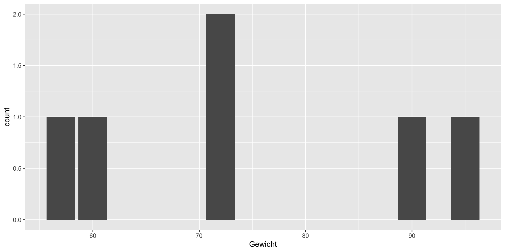
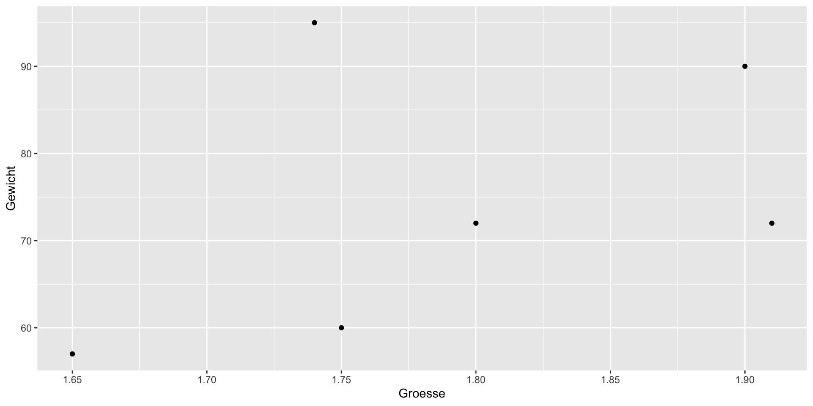
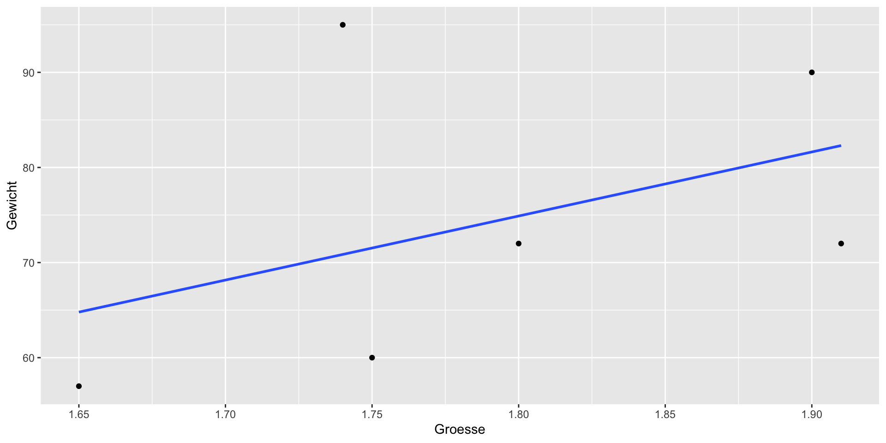
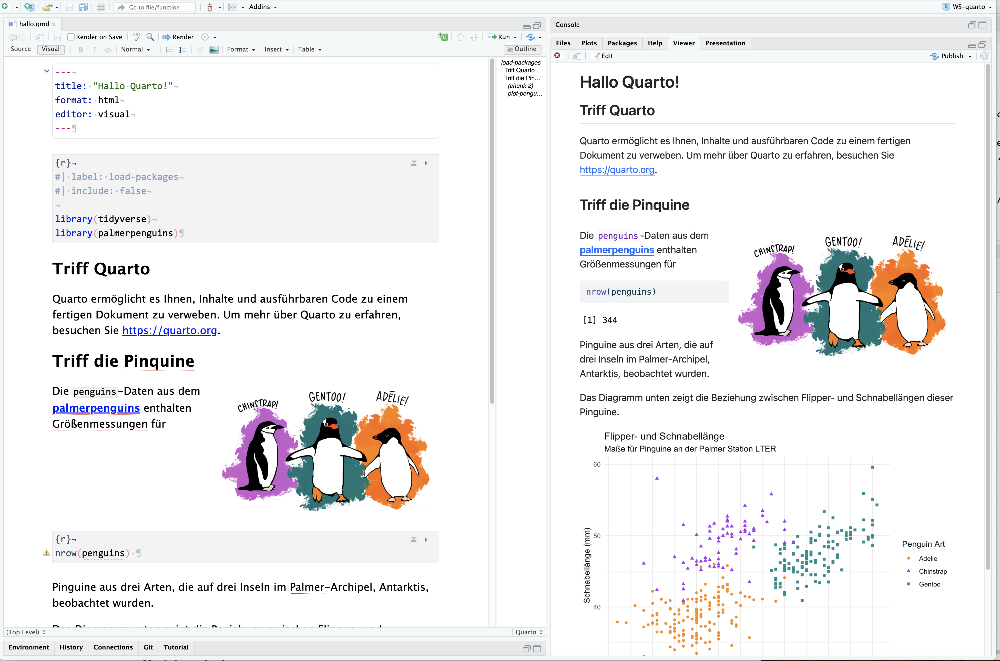
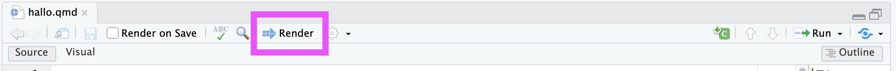
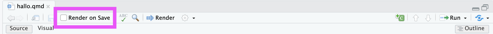

Präsentation: Sechs Dinge über R
1 Ein kurze Einfühung in unser Arbeitsumgebung
1.1 RStudio, posit.cloud oder Positron?
R
Die Skript-Sprache mit der wir hier arbeiten werden. Dazu ein eigenen Abschnitt später.RStudio (Desktop)
Eine Integrierte Entwicklungsumgeben (IDE) für R, die uns den Umgang sehr strakt erleichtert.posit.cloud
Ursprunglich RStudio cloud, jetzt aber posit.cloud ist eine Cloud-Version von RStudio Desktop. Wir nutzen hier diesen Zugang, da er einen schnellern Zungang ermöglicht.Die Zukunft: positron
Der Nachfolger von RStudio Desktop ist schon in der Pipeline. Er heisst Positron
1.2 posit.cloud
Wir nutzen posit.cloud als Cloud-Version von R bzw. RStudio.
Für diese Einführung reicht das vollkommen aus. Sie sollten aber, wenn sie öfters mit R arbeiten, darüber nachdenken R und R Studio oder Positron lokal auf ihren Rechner zu installieren. Anteiltungen finden Sie dazu reichtlich im Internet oder auf den Seiten der FOM unter https://fomshinyapps.shinyapps.io/Installation-R-RStudio-mosaic/ oder https://raw.githubusercontent.com/luebby/Datenanalyse-mit-R/master/Installation/Install.pdf
1.3 Wo ist was?
Live die ersten Schritt in der posit.cloud!
2 Die Sprache R
2.1 R die Geschichte in kurz (I/II)
Die Geschichte von R als Programmiersprache begann 1992 an der Universität Auckland in Neuseeland.
R wurde von den Statistikern Ross Ihaka und Robert Gentleman entwickelt.
Sie orientierten sich dabei stark an der Programmiersprache S, die in den Bell Laboratories in den 1970er Jahren entstanden war und für statistische Datenverarbeitung genutzt wurde.
R kann als freie Implementierung von S angesehen werden, wobei viele Programme für S auch mit R kompatibel sind.
Der Name „R“ leitet sich von den Anfangsbuchstaben der Vornamen der Entwickler Ross und Robert ab, gleichzeitig als Anspielung auf die Sprache S.
2.2 R die Geschichte in kurz (II/II)
Die Motivation für die Entwicklung von R lag in der Verbesserung bestimmter Eigenschaften von S, wie etwa der Speicherverwaltung und der Flexibilität bei der Implementierung neuer analytischer Verfahren.
Für den Anfang wurde der Interpreter auf Basis von Scheme entwickelt, geschrieben wurde R in C, Fortran und der eigenen Sprache R.
Die Sprache wurde erstmals 1993 öffentlich zugänglich gemacht und seit 1995 unter der GNU General Public License als freie Software verbreitet.
Ein wichtiges Ereignis war 1997 die Gründung des R Development Core Teams sowie die Einrichtung des Comprehensive R Archive Network (CRAN), einer zentralen Plattform für Pakete und Erweiterungen.
R hat sich seitdem zu einer Standardprogrammiersprache für statistische Analysen entwickelt und wird weltweit in Wissenschaft und Wirtschaft eingesetzt.
Die Sprache bietet eine breite Palette an statistischen Methoden und Möglichkeiten zur grafischen Visualisierung und wird von einer großen Community stetig weiterentwickelt.
2.3 Noch ein paar Meilensteine in der Entwickliung
Bis 2010 prägten mehrere Meilensteine die Entwicklung der Programmiersprache R:
1997: Gründung von CRAN (Comprehensive R Archive Network) als zentrale Plattform für Pakete und Erweiterungen, die es Anwendern ermöglicht, selbst geschriebene Funktionen einfach zu teilen und damit die Verbreitung und Nutzung von R erheblich zu fördern.
2000: Veröffentlichung von R Version 1.0, der ersten stabilen Version von R, die wichtige Funktionen wie Fehlerbehandlung (try()), Datenrahmenbearbeitung (by(), merge()) enthielt.
2001: Gründung von Bioconductor, ein Open-Source-Projekt für Genomdatenanalysen, das neben CRAN über 2000 weitere Pakete bereitstellt.
2007: Veröffentlichung von ggplot2, einem Paket basierend auf der Grammar of Graphics von Leland Wilkinson, entwickelt von Hadley Wickham. Dieses Paket revolutionierte die grafische Darstellung in R und wurde zu einem zentralen Bestandteil der R-Community und später des tidyverse.
2009: Einführung des R Journals, das die R News ersetzte und als Fachjournal Themen rund um R-Abdeckte, z. B. Erweiterungspakete, Reviews und Anwendungen.
2014: Das Paket dplyr mit seinen modernen Datenmanipulationsfunktionen wurde veröffentlicht. Eines der einflussreichsten Pakete im R-Ökosystem.
Diese Meilensteine zeigen eine kontinuierliche Verbesserung von R bezüglich Stabilität, Erweiterbarkeit und Benutzerfreundlichkeit.
2.4 Unser erstes R, ein R-Skript
Wir beginnen in dem wir uns in posit.cloud ein R-Skript Dokument erstellen und gemeinsam einige Schritte durch gehen um unser erstes (gemeinsames) R zu programmieren.
Wir beginnen mit den folgenden Zeilen:
Beachten Sie: Zuweisungen an eine Variable erfolgen durch “<-” oder “->”! An der Pfeilspitze steht immer die Variabel, auf der anderen Seite das, was sie Zuweisen wollen!
2.5 Was passiert, wenn wir das in R ausführen?
Wir erhalten die folgende Ausgabe:
[1] 1 2 3 9 8 7[1] 10.0 2.3 4.5 6.7 -1.2 -9.0[1] 5[1] 3.4[1] 11.0 4.3 7.5 15.7 6.8 -2.0[1] 10.0 4.6 13.5 60.3 -9.6 -63.02.6 Wir machen etwas einfache Statistik
Zu nächst bauen wir von Hand ein paar Daten auf, dazu erzeugen wir zwei Vektoren mit dem combine-Befehl c():
Jetzt können wir den BMI (also den Body Mass Index) einfach berechnen:
2.7 Noch ein paar Zeilen
Den Mittelwert können wir, quasi von Hand, berechnen in dem wir die Summe durch die Anzahl teilen:
Es gibt aber auch den Befehl mean() dafür:
2.8 Noch ein paar weitere Zeilen
Die Standardabweichung ist die Wurzel der Varianz, welches wiederum die durchschnittliche Summe der quadratischen Abweichungen vom Mittelwert ist:
[1] -14.333333 -2.333333 -17.333333 15.666667 20.666667 -2.333333[1] 15.42293Aber auch hierfür gibt es einfachere Befehle:
Oder noch kürzer mit dem Befehl sd() ( sd = standard derivation, zu deutsch Standardabweichung ):
2.9 Unsere erste Tabelle
Normalerweise werden in R Datenrahmen (data.frame) zur Speicherung von Tabellen benutzt.
Wir nutzen hier aber tibbles aus dem Paket tibble. Es sind im Prinzip Datenrahmen nur etwas moderner implementiert:
# A tibble: 6 × 2
Gewicht Groesse
<dbl> <dbl>
1 60 1.75
2 72 1.8
3 57 1.65
4 90 1.9
5 95 1.74
6 72 1.91Bitte beachten Sie: Parameterzuweisungen, also Zuweisungen innerhalb von Funktionsaufrufen, erfolgen mit “=”!
2.10 Die Struktur einer Tabelle
Um auch in Skripten die Struktur einer Tabelle darstellen zu können nutzen wir den Befehl str():
tibble [6 × 2] (S3: tbl_df/tbl/data.frame)
$ Gewicht: num [1:6] 60 72 57 90 95 72
$ Groesse: num [1:6] 1.75 1.8 1.65 1.9 1.74 1.91Oder auch moderner mit dem Befehl glimpse():
2.11 Unterschied zu Datenrahmen?
Hätten wir die im R normalerweise implementierten Datenrahmen (data.frames) benutzt hätten wir das folgende Ergebnis:
Gewicht Groesse
1 60 1.75
2 72 1.80
3 57 1.65
4 90 1.90
5 95 1.74
6 72 1.91'data.frame': 6 obs. of 2 variables:
$ Gewicht: num 60 72 57 90 95 72
$ Groesse: num 1.75 1.8 1.65 1.9 1.74 1.91Rows: 6
Columns: 2
$ Gewicht <dbl> 60, 72, 57, 90, 95, 72
$ Groesse <dbl> 1.75, 1.80, 1.65, 1.90, 1.74, 1.91Für uns als Nutzer:in sind diese beiden Datentabellenarten (annähernd) gleich zu benutzen.
2.12 Umwandeln von tibble nach data.frame und zurück
Wir können wie folgend zwischen den beiden Datentypen umwandeln:
2.13 Unsere erste Graphik
Für Grafiken wollen wir ggplot aus dem Paket ggplot2 benutzen. Dafür müssen wir zunächst das Paket laden:
Nun wollen wir ein Säulendiagramm erstellen:
2.14 Oder etwas kompakter:

2.15 Die Kennzahlen
Die Kennzahlen erhalten wir z.B. wie folgt:
2.16 Aufgabe
Erzeugen sie eine neue Tabelle mit dem Namen tib2, welche die Spalten Groesse, Gewicht und BMI enthält.
Geben Sie die Mittelwerte aller drei Spalten aus.
Geben Sie ein Säulendiagramm des BMI an.
2.17 Spalten zu Tabellen hinzufügren mit `mutate()```
Wir nutzen dazu das Paket dplyr und den Befehl mutate():
2.18 Geben wir nun einen Boxplot aus
Wir nutzen nun die Tabelle tib3 um Boxplot auszugeben:
oder:
2.19 Aufgabe
Nutzen Sie die Tabelle tib3 und erstellen Sie einen Boxplot für die Varable BMI.
Nutzen Sie die Tabelle tib3 und erstellen Sie einen Boxplot für die Variable BMI, aber nach Geschlechtern getrennt!
2.20 Streudiagramme
Zur Darstellung von (vermuteten) Zusammenhängen zweier numerischer Variablen nutzen wir Streudiagramme (engl. Scatterplot, hier mittel dem Geom: geom_point:
Der Korrellationkoeffizent berechnet sich zu:
Eine lineare Regression scheint keine schlechte Idee zu sein.
2.21 Eine lineare Regression
Call:
lm(formula = Gewicht ~ Groesse, data = tib3)
Coefficients:
(Intercept) Groesse
-46.34 67.35 Eine etwas ausführlichere Darstellung erhalten wir mittels des Befehls summary():
Call:
lm(formula = Gewicht ~ Groesse, data = tib3)
Residuals:
1 2 3 4 5 6
-11.527 -2.895 -7.792 8.370 24.147 -10.303
Coefficients:
Estimate Std. Error t value Pr(>|t|)
(Intercept) -46.34 124.02 -0.374 0.728
Groesse 67.35 69.13 0.974 0.385
Residual standard error: 15.5 on 4 degrees of freedom
Multiple R-squared: 0.1918, Adjusted R-squared: -0.01027
F-statistic: 0.9492 on 1 and 4 DF, p-value: 0.38512.22 Eine Grafik dazu
Wir können nun diese Regressiongrade in unsere Grafik einbauen:
2.23 Ein kleiner Ausblick
tib3 |>
ggplot(aes(x = Groesse, y = Gewicht, color = Geschlecht)) +
geom_point() +
geom_smooth(
mapping = aes(x = Groesse, y = Gewicht),
inherit.aes = FALSE,
method = lm,
se=F,
formula = y ~ x) +
labs(
title = "Unser Streudiagramm",
subtitle = "Daten nach 'männlich' und 'weiblich' unterschieden",
caption = "Etwas mehr Text als vielleicht nötig?",
tag = "WICHTIG!"
)2.24 Tabellen und das Dollarzeichen
Intern speichert R Tabellen Spalten und nicht, wie zum Beispiel die meisten relationalen Datenbanken, Zeilenweise.
Das ermöglicht auf der einen Seite schnellen Zugriff aus einzelne Spalten:
2.25 Spalten und Zeilen in R
2.26 Spalten und Zeilen auswählen mit dem Paket dplyr
# A tibble: 6 × 1
Geschlecht
<chr>
1 weiblich
2 männlich
3 weiblich
4 männlich
5 weiblich
6 männlich $Geschlecht
[1] "weiblich" "männlich" "weiblich" "männlich" "weiblich" "männlich"2.27 Etwas komplizierter
Wir wollen eine Zusammenfassung (eng. summarise) bei den Männern erstellen. Dabei geben wir die Anzahl (n), den Mittelwert des Gewichts (mean) und den Median der Größe (median) an:
2.28 Gruppieren
Mit dem Befehl group_by() können wir kategoriale Variablen (also Spalten) nutzen um einzelne Fälle (also Kategorien) zu unterscheiden:
2.29 Daten aus einer Datei einlesen (CSV-Version)
2.30 daten aus einer Datei einlesen (Excel-Version)
3 Das Tidyverse
4 Datenbanken als Quelle
5 Quarto - Für Berichte
5.1 Einleitung oder die Anwort auf: Was ist Quarto?
Quarto ist eine mehrsprachige, modernisierte Version von R Markdown und umfasst Dutzende neuer Funktionen und Möglichkeiten, während es gleichzeitig die meisten vorhandenen Rmd-Dateien (also R markdown Dateien) ohne Modifikation übersetzen kann.
In diesem Workshop zeigen ich Ihnen, wie Sie Quarto verwenden. Sie werden Code und Markdown bearbeiten. Sie lernen, wie Sie mit jedem Rechendokument (z.B. R oder Python) umgehen, und das gerenderte Dokument im Viewer-Tab während Ihrer Arbeit anzeigen.
5.2 Was ist Quarto nicht?
Quarto ist kein Wunderwerk.
Es vereinfacht u.U. einiges in ihrem Arbeitsfluss. Aber um das zu erreichen nimmt es Ihnen auch Entscheidung z.B. über das Layout ab. – Vieles können Sie aber steuern und ggf. (mit Mühe) Ihren Bedürfnissen anpassen.
Wer Freiheit will muss also immer noch Extraarbeit in Projekte investieren.
Wer aber mit vorgefertigten Dokumentenfassungen zu frieden ist, hat mit Quarto ein Veröffentlichungssystem gefunden, das viele Abreitsschritte vereinfacht.
Quarto ist auch kein Selbstläufer.
Weder für Dozent:innen, noch für Lernende! Beide brauchen Anleitung und Hilfestellung! Ohne Schulung können wir hier keine guten Ergebnisse erwarten.
5.3 Die Installation von Quarto
Auf der Seite Get Started Seite von Quarto können Sie die Quarto CLI für Ihr Betriebssystem herunterladen und Installieren.
Zum Umwandeln von Quarto Dokumenten in R Studio bzw. posit.cloud brauchen Sie noch das R Paket
quarto, welches Sie wie folgt in R installieren können:
- Falls Sie LaTeX benutzen wollen, können Sie es aus dem Terminal wie folgt installieren:
- Im Verzeichnis
setuphabe ich ihnen mitsetup.Rein kleines R Skript erstellt, welches die notwendigsten Pakete installiert.
5.4 Der Weg der Quarto markdown Datei zum Ausgabeformat
5.4.1 In der R Welt (via knitr):

5.4.2 In der restlichen Welt (via Jupyter)

Wir sehen hier die Abhöngigkeit von Quarto (eben so wie wir es von R markdown kennen) von pandoc!
Auch wenn pandoc sich selber vorstellt mit
If you need to convert files from one markup format into another, pandoc is your swiss-army knife.
wissen wir , dass auch ein Schweizer Taschenmesser nicht alle Probleme optimal lösen kann.
Um es klar zu fomulieren:
Wer nur ein Dokument erstellen will, mit einem festen Inhalt und dabei keine Berechnung (in R oder Python) braucht ist fast immer mit anderen Werkzeugen besser bedient.
5.5 Der Weg der Quarto markdown Datei zum Ausgabeformat (Fortsetzung)
Wer aber aus einem Dokument u.U. mehrere Zielformate bespielen will. Wer umfangreiche Berechungen (in R oder Python) hat die dynamische Änderungen nach sich ziehen. Wer einen Weg sucht dieses, auf vorgefertigten Wegen, ohne viel mehr zu lernen erreichen will, der kommt am Quarto kaum vorbei.
Aber: TANSTAAFL1
Da Quarto auf pandoc basiert hängen wir sehr stark von den Fähigkeit von pandoc ab. Das zeigt sich unter anderem bei den Ausgabeformaten PDF und Beamer. Diese benutzen neben pandoc eben auch eine funktionierende (und gewartete) TeX (und LaTeX) Version!
In der R-Welt können wir das u.U. mit dem Paketen tinytex erhalten. Alternative können wir auch TeX (und damit auch LaTeX) über eine direkte Installation nutzbar machen. Informationen zu einer solchen Installation erhalten Sie bei Dante e.V..
5.6 Die Ausgabeformate (ein Überblick)
5.7 Dokumente
- HTML
- PDF
- MS Word
- OpenOffice
- ePub
5.8 Presentations
- Revealjs
- PowerPoint
- Beamer
5.9 Markdown
- GitHub (GitHub Flavored Markdown (GFM))
- CommonMark
- Hugo
- Docusaurus
- Markua
5.10 Wikis
- MediaWiki
- DokuWiki
- ZimWiki
- Jira Wiki
- XWiki
Und noch eine ganze Reihe weitere Formate. (Siehe hier)
5.11 Ein erstes Dokument: Beispiel 1 - hallo.qmd
Der folgende Text ist ein Quarto-Dokument mit der Erweiterung .qmd (links) sowie die gerenderte Version als HTML (rechts). Sie können es auch in andere Formate wie PDF, MS Word usw. rendern.

5.12 Beispiel 1 (Fortsetzung)
Dies ist das Grundidee für die Veröffentlichung mit Quarto – nehmen Sie ein Quelldokument und wandeln2 Sie es in eine Vielzahl von Ausgabeformaten mit Quarto um.
5.13 Umwandeln oder rendern
Die Schaltfläche “Rendern” in der RStudio-IDE (oder posit.cloud) können Sie nutzen um die Datei zu rendern und die Ausgabe mit einem einzigen Klick oder Tastaturkürzel (⇧⌘K) zu betrachten.
Sie finden Sie Schaltfläche oben im Texteditor:

Sie können auch beim Speichern einer Datei diese automatisch rendern lassen. Dazu können Sie die Option “Rendern beim Speichern” in der Symbolleiste des Editors aktivieren. Die Vorschau wird aktualisiert, sobald Sie das Dokument erneut rendern.
Die nebeneinander angeordnete Vorschau funktioniert sowohl für HTML- als auch PDF-Ausgaben.

5.14 Umwandeln oder rendern (Fortsetzung)
Umwandeln mittels R-Konsole und dem R-Paket quarto der Datei in ein PDF-Dokument:
Umwandeln aus dem Terminal mittels der Quarto CLI:
Beim Rendern erzeugt Quarto eine neue Datei, die den ausgewählten Text, Code und deren Ergebnisse aus der .qmd-Datei enthält.
Die neue Datei kann ein HTML-, PDF-, MS Word-Dokument, eine Präsentation, eine Website, ein Buch, ein interaktives Dokument oder ein anderes Format sein.
5.15 Die Quarto CLI
Das Quarto CLI3 ermöglicht es auch außerhalb einer IDE4 bzw. R mit einem Quarto Markdown Dokument zu arbeiten.
Hilfe erhalten Sie mit:
Ein (ganzes) Quarto Projekt können Sie wie folgt erstellen:
Mit diesem Befehl wird ein neues Verzeichnis mit dem Namen “Neues_Projekt” erzeugt.
5.16 Die Quarto CLI (Fortsetzung)
In dem Verzeichnis “Neues_Projekt” sind nun die folgenden Dateien enthalten:
“Neues_Projekt.Rproj” (eine Projekt Datei für RStudio/ posit.cloud),
“Neues_Projekt.qmd” (ihre Startdatei für das eigene Dokument) und
“_quarto.yml” (ein YAML-Datei für alle qmd Dateien im Verzeichnis, dazu später mehr)
5.17 Die Quarto CLI (Fortsetzung)
Eine Quarto Markdown Datei (typischerweise mit der Endung .qmd) kann mittels Quarto CLI umgewandelt werden:
Sie können für die Ausgabe auch ein Ausgabeformat angeben (hier z.B. ´html´):
Wenn Sie anstatt eines Dokumentes ein Quarto Verzeichnis angeben, wir das gesamte Projekt übersetzt:
5.18 Der (optionale) YAML-Kopf
Ein (optionaler) YAML5-Kopf wird von drei Bindestrichen (- - -) an beiden Enden begrenzt.
Beim Übersetzen wird der Titel “Hallo Quarto!” oben im übersetzen Dokument mit einer größeren Schriftgröße als der Rest des Dokuments angezeigt. Die anderen beiden YAML-Felder geben an, dass die Ausgabe im HTML-Format erfolgen soll und das Dokument standardmäßig im visuellen Editor geöffnet werden soll.
5.19 Der (optionale) YAML-Kopf (Fortsetung)
Die grundlegende Syntax von YAML verwendet Schlüssel-Wert-Paare im Format “Schlüssel: Wert” (engl. key: value).
YAML-Felder, die häufig in Kopfzeilen von Dokumenten gefunden werden, umfassen Metadaten wie Autor (author), Untertitel (subtitle), Datum (date) sowie Anpassungsoptionen wie Thema (theme), Schriftfarbe (fontcolor), Abbildungsweite (fig-width) usw.
---
title: "Hallo Quarto"
subtitle: "Eine kurze Einführung"
date: 2024-06-06
author: "Norman Markgraf"
format:
html: default
docx: default
---
Alle verfügbaren YAML-Felder für HTML-Dokumente finden Sie hier.
5.20 Der (optionale) YAML-Kopf (Fortsetung)
Die verfügbaren YAML-Felder variieren je nach Zielformat. Je nach Zielformat finden Sie hier den Link zu den wichtigsten YAML-Feldern:
- PDF-Dokumente,
- MS Word und
- OpenDocument Format (für LibreOffice oder Apache OpenOffice).
5.21 Markdown Basics
Quarto basiert auf pandoc und verwendet dessen Variante von Markdown als zugrunde liegende Dokumentensyntax. Pandoc-Markdown ist eine erweiterte und leicht überarbeitete Version der Markdown-Syntax von John Gruber.
A Markdown-formatted document should be publishable as-is, as plain text, without looking like it’s been marked up with tags or formatting instructions. – John Gruber
Im folgenden finden Sie Beispiele für die am häufigsten verwendete Markdown-Syntax.
Eine vollständige Dokumentation von Pandocs Markdown finden Sie hier.
5.22 Text Formatierung
| Markdown Syntax | Ausgabe |
|---|---|
| *kursiv*, _kursiv_, **fett**, ***fett kursiv*** | kursiv, kursiv, fett, fett kursiv |
| superscript^2^ / subscript~2~ | superscript2 / subscript2 |
| ~~durchgestrichen~~ | |
| `verbatim code` | verbatim code |
5.23 Kopfzeilen
| Markdown Syntax | Ausgabe |
|---|---|
| # Kopf 1 | Kopf 1 |
| ## Kopf 2 | Kopf 2 |
| ### Kopf 3 | Kopf 3 |
| #### Kopf 4 | Kopf 4 |
| ##### Kopf 5 | Kopf 5 |
5.24 Links & Bilder
| Markdown Syntax | Ausgabe |
|---|---|
<http://quarto.org> |
http://quarto.org |
[Quarto](http://quarto.org) |
Quarto |
 |
 |
[](https://quarto.org) |
|
5.25 Listen I/II
5.27.2
- ungeortnete Liste
- Unterpunkt 1
- Unterpunkt 2
- Unter-Unterpunkt 1
5.27.4
Punkt 2
Weiter in diesem Punkt mit 4 Leerzeichen am Zeilenanfang.
5.28 Listen II/II
5.30.2
- Eine Liste die hier starte
geht weiter
- nach einer Unterbrechung
5.30.4
- Eine Liste
- Gefolgt von einer zweiten Liste
5.31 Listen (Wichtig!)
Im Gegensatz zu anderen Markdown-Renderern (insbesondere Jupyter und GitHub) müssen Listen in Quarto eine vollständige Leerzeile oberhalb und unterhalb der Liste haben!
Andernfalls wird die Liste nicht als Liste erkannt und nicht in Listenform gerendert.
Sie erscheint damit als normaler Text in einer einzigen Zeile.
5.32 Tabellen
5.33 Quellcode
Sie können mit ``` einen Codeblock begrenzen:
Durch die Angabe einer Sprache aktivieren Sie die passende Syntax-Herforhebung:
Pandoc unterstützt die Syntaxhervorhebung für über 140 verschiedene Programmiersprachen. Wenn Ihre Sprache nicht unterstützt wird, können Sie die Standardsprache default verwenden, um eine ähnliche visuelle Darstellung zu erhalten:
5.34 Roh-Inhalte
Ein Roh-Inhalt kann direkt eingefügt werden ohne dass Quarto ihn übersetzt. Dazu wird ein pandoc raw-Attribut verwendet.
Ein raw-Block beginnt mit ```{= gefolgt von einem Format und schließt mit }, z. B. hier ist ein raw-HTML-Block:
Oder hier für raw-(La)TeX Blöcke:
Sogenannter inline-Code wird wie folgt einfügt:
5.35 Mathematische Formeln
Verwenden Sie $-Begrenzer für Inline-Formel und $$-Begrenzer für Displaystyle-Formeln. Zum Beispiel:
| Markdown Syntax | Ausgabe |
|---|---|
| Inline math: $E = mc^{2}$ | Inline math: E = mc^{2} |
| Display math: $$E = mc^{2}$$ | Display math: E = mc^{2} |
Für eigene TeX-Macros können Sie den $$-Begrenzer in einem .hidden Block nutzen:
5.36 Mathematische Formeln
Beachten Sie:
Für HTML benutzt pandoc in der Regel MathJax. Ich empfehle Ihnen aber KaTeX zu nutzen. Dazu können Sie im YAML-Kopf die folgende Zeile einfügen:
5.37 Diagramme
Quarto unterstützt das Einbetten von Mermaid- und Graphviz-Diagrammen nativ. Dies ermöglicht es Ihnen, Flussdiagramme, Sequenzdiagramme, Zustandsdiagramme, Gantt-Diagramme und mehr mit einer Klartextsyntax zu erstellen, die von Markdown inspiriert ist.
Zum Beispiel betten wir hier ein mit Mermaid erstelltes Flussdiagramm ein:
Mehr finden sie hier.
5.38 Videos
Videos können in Dokumente einfügen, indem Sie den {{< video >}}-Shortcode verwenden. Als Beispiel betten wir hier ein YouTube-Video ein:
Videos können auf Videodateien (z.B. MPEG) verweisen oder Links zu auf YouTube, Vimeo oder Brightcove veröffentlichten Videos sein.
Mehr zu dem Thema finden sie hier.
5.39 Seitenumbrüche
Der pagebreak-Shortcode ermöglicht es Ihnen, einen nativen Seitenumbruch in ein Dokument einzufügen (z.B. in LaTeX wäre dies ein \newpage, in MS Word ein docx-nativer Seitenumbruch, in HTML eine page-break-after: always CSS-Direktive, usw.):
Native Seitenumbrüche werden für HTML, LaTeX, Context, MS Word, Open Document und ePub unterstützt (für andere Formate wird ein Form-Feed-Zeichen \f eingefügt).
5.40 Callout Blöcke
Mehr zu diesem Thema Callout Blocks finden sie hier.
5.41 Die Datei “_quarto.yml”
Die Datei “_quarto.yml” im Hauptverzeichnis kann zusätzliche Optionen im YAML Syntax enthalten und wird vor dem jeweiligen YAML-Kopf der qmd-Datei geladen und verarbeitet.
Die in der Datei hinterlegten Optionen werden somit von jeder in dem Verzeichnis gelegenden qmd-Datei übernommen.
Ein Beispiel einer “_quarto.yaml” Datei:
title: |
| Eine kurze Einführung
| Workshop: Quarto
institute: "FOM"
author: "Dipl.-Math. Norman Markgraf"
lang: de
format:
html:
html-math-method: katex
So können Sie aus einem Verzeichnis unterschiedliche Dokument, zum Beispiel für Tagesfolien einer Veranstaltungsreihe, immer mit den selben YAML Informationen füttern.
5.42 Beispiel 2: Mehrere qmd Dateien mit einer “_quarto.yaml” Datei
Im Verzeichnis “Beispiel 2” haben Sie eine kleine Anwendung für eine “_quarto.yaml” Datei.
In dem Ordner befinden sich zwei ‘Vorlesungs’-Dateien. Beide gehören zur selben Vorlesung und haben viele der Meta-Daten (u.a. Titel, Sub-Titel und Autor) gemeinsam. Daher ist es sinnvoll diese aus den qmd-Dateien in die “_quarto.yml” auszulagern.
Übung:
Gehen Sie via Terminal in das Verzeichnis “Beispiel 2” und nutzen Sie die Quarto CLI um alle Vorlesungsdateien zu rendern.
Tipp:
Sie benötigen zum Rendern nur einen Befehl!
| <!– ## RevealJS und PDF-Dateien |
| Wie gesagt TANSTAAFL. |
| Ein Rückschlag ist, dass RevealJS Dateien im Prinzip HTML Dateien sind und eben keine PDF Dateien. |
| Ein einfaches Umwandeln mit Quarto in ein PDF-Dokument ist leider auch nicht wirklich möglich, da wir dabei die Formatierung verlieren. Diese ist als CSS6 mit der HTML, nicht aber mit der LaTeX-Datei und somit der PDF-Datei verbunden. |
| Einfach das Zielformat in PDF zu ändern geht zwar, führt aber nicht zu zufriedenstellenden Ergebnissen. |
5.43 RevealJS und PDF-Dateien ein Paar Workarounds
Webbowser
Falls sie Chrome oder Chromium nutzen, dann können Sie die RevealJS-HTML Dateien dort laden und mittels der internen Druckroutine als PDF umwandeln. Änliches geht auch mit Safari unter MacOS. Die jeweilige Qualität der Ausdrucke schwankt aber mitunter sehr stark!Sie können Chromium lokal durch den folgenden Befehl installieren:
Decktape
Unter https://github.com/astefanutti/decktape finden Sie einen unter Node.js laufenden “high-quality PDF exporter for HTML”. Dieser ermöglicht das Umwandeln der HTML in PDF Dokumente auch im Batch-Betrieb.
Aber, auch Decktape benutzt intern Chome bzw. Chomium.Professionelle Lösungen
Das Umwandeln von HTML in ansprechende PDF Dokumente beschäftig eine ganze Industie. Leider sind deren Produkte meist sehr teuer und – zumindeste in den freien Testversionen – führen hier selten zu guten Ergebnissen.
| –> |
| ## Eine kleine Webseite, ein PDF- und ein Word-Dokument |
| Im Verzeichnis “Beispiel 3” habe ich Ihnen ein kleines Dokument erstellt, welches sowohl eine kleine Webseite, ein kleines PDF-Dokument als auch ein kleines Word Dokument erzeugt. |
| Übung: |
| Gehen Sie in das Verzeichnis “Beispiel 3” und übersetzen Sie das Dokument im Terminal mit Hilfe des folgenden Befehls: |
| ::: {.cell} |
{.sh .cell-code} > quarto render Dokument.qmd ::: |
| Öffnen Sie danach die Dateien “Dokument.html” im Webbrowser, das PDF-Dokument “Dokument.pdf” im PDF-Vier und die Word-Datei “Dokument.docx” in Word. |
6 ShinyApp - Für Dashboards
Fußnoten
Nach Robert A. Heinlein aus seinem Roman
Revolte auf Luna(1966) : „there ain’t no such thing as a free lunch”Dieses
umwandelnnennen wir auchrendern. ;-)Quarto CLI steht für Quarto Command Line Interface, die Kommandozeileschnittstelle.
IDE steht für Integrated Development Environment, Integrierte Entwicklungsumgebung
YAML steht für “YAML Ain’t Markup Language” und dient hier dazu den Übersetzungs- bzw. Bearbeitungsprozess durch zusätzlichen Optionen zu steuern. Vgl. auch YAML bei Wikipedia
CSS steht Cascading Style Sheets
Workshop: Sechs Dinge über R | Dipl.-Math. Norman Markgraf